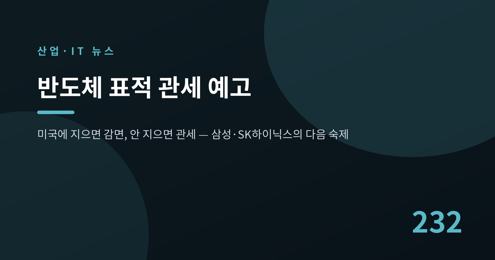
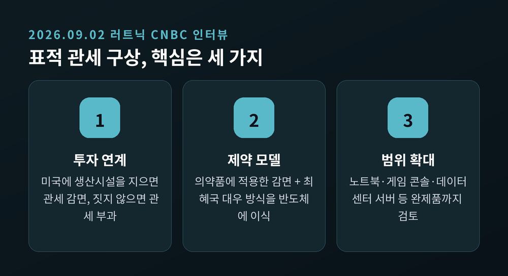
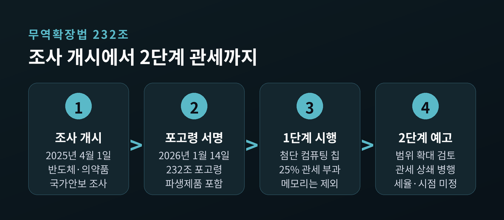
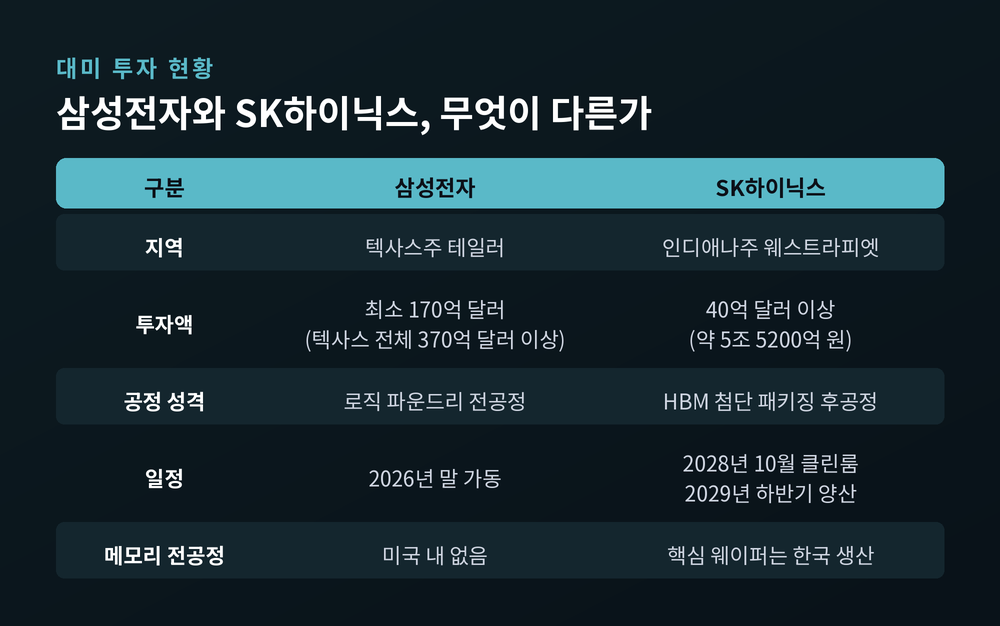
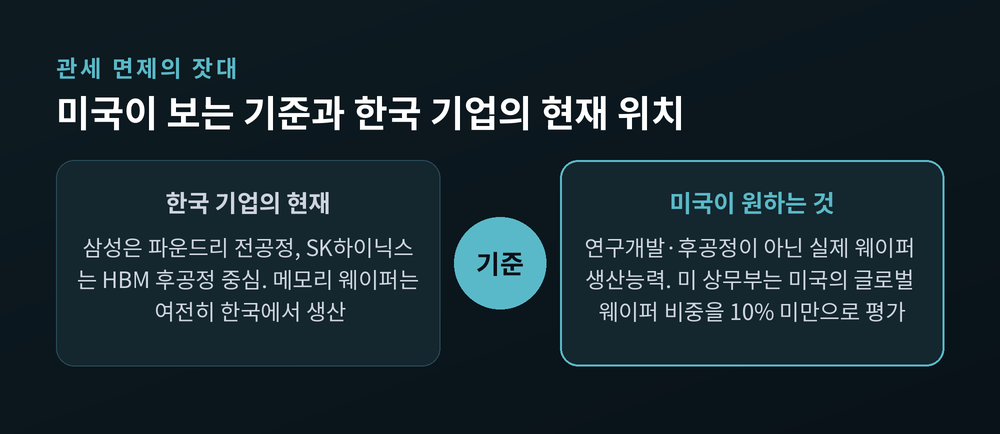
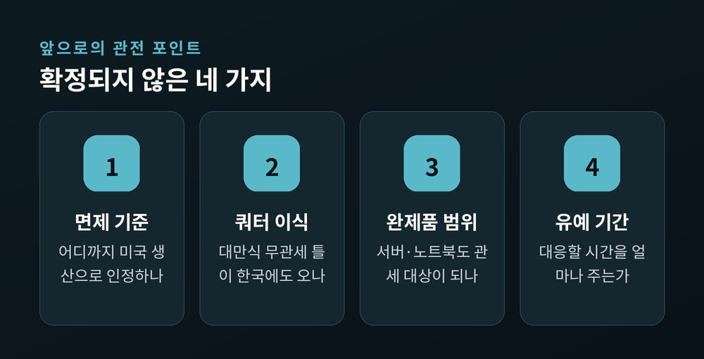

반도체 표적 관세 예고, 삼성·SK하이닉스 대미 투자 압박 커진다

이번 글에서는 미국의 반도체 표적 관세 구상과 그것이 삼성전자·SK하이닉스에 남긴 숙제를 정리해 보겠습니다. 2026년 9월 2일 하워드 러트닉 미 상무장관의 한마디가 국내 반도체 업계를 긴장시켰습니다. 발언은 짧았지만 그 안에 담긴 설계도는 제법 구체적입니다.
무슨 일이 있었나 — "지으면 면제, 안 지으면 관세"
러트닉 장관은 9월 2일(현지시간) 미국 CNBC '스쿼크 박스'에 출연했습니다.
그는 앞으로의 반도체 관세를 "표적화되고(targeted) 신중한(thoughtful) 정책"이라고 표현했습니다. 그리고 이렇게 덧붙였습니다. "미국에서 생산하면 관세를 내지 않지만, 여기서 생산하지 않으면 세계에서 가장 위대한 시장에 진입하기 위해 대가를 치를 각오를 해야 한다."
정리하면 구조는 단순합니다. 미국에 반도체 생산시설을 짓는 기업에는 관세를 감면하거나 면제하고, 짓지 않는 기업에는 관세를 물린다. 진행자가 "외국 기업의 관세 감면을 미국 내 제조 투자와 연계하는 구조를 선호하느냐"고 묻자 그는 "그렇다. 정확히 맞다"고 답했습니다.
모델은 제약업계입니다. 러트닉 장관은 "행정부가 의약품을 다룬 방식을 보라"며, 미국에서 혁신 의약품을 생산한 기업에 관세를 감면하고 최혜국 대우를 적용했던 사례를 반도체에도 적용할 것이라고 밝혔습니다.
주목할 점은 강도입니다. 2025년 8월만 해도 그는 "미국에 공장을 짓겠다고 약속하고 이행하는 기업에는 관세를 보류하겠다"고 말했습니다. 지금은 보류가 아니라 감면과 부과의 이분법입니다. 예전엔 유예의 언어였고, 지금은 선별의 언어입니다.

관세 대상이 칩을 넘어 완제품까지
이 발언에는 앞선 보도가 깔려 있습니다.
미국 정치전문매체 폴리티코는 8월 27일 논의 내용을 아는 관계자 8명을 인용해, 트럼프 행정부가 훨씬 넓은 반도체 관세를 검토 중이라고 전했습니다. 검토안에는 반도체 자체뿐 아니라 노트북, 게임 콘솔, 데이터센터 서버 등 반도체가 탑재된 완제품까지 관세 대상에 넣는 방안이 포함됐습니다.
국가별로 관세율과 수입 쿼터를 달리 적용하는 방안, 주요 반도체 제조사를 겨냥한 국가별 지침을 만드는 방안도 함께 거론됐습니다. 한꺼번에 매기지 않고 일정 기간에 걸쳐 단계적으로 도입하는 방식도 검토 대상입니다.
완제품 확대가 특히 민감한 이유가 있습니다. AI 데이터센터에는 엔비디아·AMD의 가속기만 들어가는 것이 아닙니다. 서버와 네트워크 장비 등 반도체 기반 하드웨어가 대량으로 투입됩니다. 관세가 여기까지 미치면 미국 자신의 AI 인프라 구축 비용이 올라갑니다. 미국 기술업계가 반발하는 지점입니다.
다만 아직 확정된 것은 없습니다. 백악관은 "공식 발표 전까지 구체적인 관세 보도를 확정된 정책으로 봐서는 안 된다"는 입장을 냈습니다. 세율도, 대상 품목도, 국가별 적용 방식도 유동적입니다.
배경 — 무역확장법 232조와 1단계 관세
이 사안은 갑자기 튀어나온 것이 아닙니다.
미 상무부는 2025년 4월 1일자로 반도체와 의약품에 대해 무역확장법 232조 국가안보 조사를 시작했습니다. 232조는 특정 품목의 수입이 국가 안보를 위협한다고 판단될 때 대통령에게 관세 등 조치 권한을 주는 조항입니다.
그리고 2026년 1월 14일, 트럼프 대통령이 반도체·반도체 제조장비와 파생제품 수입을 조정하는 232조 포고령에 서명했습니다.
1단계 조치는 제한적이었습니다. 엔비디아 H200, AMD MI325X 같은 특정 첨단 컴퓨팅 칩에 25% 관세를 매기되, 미국 데이터센터 구축이나 연구개발 용도로 들어오는 물량에는 폭넓은 예외를 뒀습니다. D램과 낸드플래시 등 메모리 전반은 지금도 이 관세를 비켜가 있습니다.
백악관은 당시 2단계 방침을 명시했습니다. 1단계로 일부 칩에 25%를 부과하며 주요 교역국과 협상하고, 협상이 끝나면 2단계에서 더 넓고 높은 관세를 검토한다는 것이었습니다. 미국 내 투자 기업에 우대 관세를 주는 '관세 상쇄 프로그램'도 이때 언급됐습니다.
이번 러트닉 발언은 그 2단계의 윤곽이 드러난 장면으로 읽힙니다.

삼성전자와 SK하이닉스는 어디까지 와 있나
두 회사 모두 이미 미국에 대규모 투자를 하고 있습니다.
삼성전자는 텍사스주 테일러에 최소 170억 달러를 들여 첨단 파운드리 공장을 짓고 있습니다. 올해 말 가동에 들어갑니다. 1996년부터 운영해온 오스틴 공장과 연구·개발 시설을 포함하면 텍사스 지역 향후 투자 계획은 370억 달러를 넘습니다.
SK하이닉스는 인디애나주 웨스트라피엣에 40억 달러 이상을 투자해 HBM 첨단 패키징 공장을 건설 중입니다. 8월 27일 기공식을 열었고, 2028년 10월 클린룸 완공, 2029년 하반기 차세대 HBM 양산이 목표입니다. 한국에서 만든 웨이퍼를 인디애나로 보내 패키징과 검사를 거친 뒤 '미국산'으로 현지 고객에게 공급하는 구조입니다.
문제는 성격입니다. 삼성전자의 미국 전공정 시설은 로직 파운드리 중심이고, D램·낸드 같은 메모리 전공정 생산기지는 미국에 없습니다. SK하이닉스의 미국 투자는 후공정에 무게가 실려 있습니다. 핵심 웨이퍼는 여전히 한국에서 나옵니다.
그래서 다음 질문이 남습니다. 관세 면제 기준에서 파운드리 팹과 HBM 후공정 투자를 어디까지 '미국 생산'으로 인정할 것인가. 이 선을 어떻게 긋느냐에 따라 두 회사의 부담이 갈립니다.

왜 중요한가 — 기준이 '웨이퍼 생산능력'으로 옮겨갈 때
러트닉 장관이 인터뷰에서 성과로 든 사례는 TSMC와 마이크론이었습니다.
그는 TSMC가 애리조나에 2650억 달러, 마이크론이 미국 내 메모리 생산에 2500억 달러를 투자한다며 "두 회사만으로도 5000억 달러가 넘는다"고 했습니다. TSMC의 공식 발표 기준 애리조나 투자액은 1650억 달러여서 숫자에는 차이가 있습니다만, 그가 어떤 그림을 원하는지는 분명합니다.
마이크론은 2035년까지 미국에 2500억 달러를 투자해 전체 D램의 40%를 미국에서 만들겠다는 목표를 두고 있습니다. 연구개발이나 후공정이 아니라 실제 웨이퍼 생산능력입니다.
업계에서는 미 상무부가 올해 초 미국의 글로벌 웨이퍼 생산능력 비중을 10% 미만으로 평가했다는 이야기가 나옵니다. 미국 안에서 만들 수 있는 물량 자체가 아직 제한적이라는 뜻입니다. 웨이퍼 생산능력이 관세 면제의 핵심 잣대가 된다면, 두 회사 모두 미국 내 메모리 전공정 투자 압박을 받게 됩니다.
이미 참고할 틀도 있습니다. 미국은 대만과의 합의에서 미국에 새 팹을 짓는 기업에 건설 기간에는 현지 계획 생산능력의 2.5배, 완공 이후에는 1.5배까지 무관세 수입을 허용하는 방안을 마련했습니다. 미국 내 생산을 늘릴수록 해외 공장 물량도 더 많이 무관세로 들어오는 셈입니다.
한국은 2025년 7월 한미 협상에서 상호관세를 25%에서 15%로 낮췄고, 반도체는 "대만 대비 불리하지 않은 수준"의 대우를 확보했습니다. 다만 반도체 협상 자체가 아직 끝나지 않았습니다. 대만식 쿼터 구조가 그대로 적용될지도 확인되지 않았습니다.
쟁점 — 돈, 기술, 그리고 사이클
압박이 커져도 결정이 쉽지 않은 이유는 세 가지입니다.
첫째, 비용입니다. 첨단 메모리 전공정 팹 하나에 수십조 원이 들어갑니다. SK하이닉스가 최근 투자를 결정한 청주 M17에 19조 1000억 원, 용인 Y2에 35조 2000억 원이 투입됩니다. 카운터포인트리서치는 미국 팹 건설비가 한국의 약 두 배 수준이라고 분석했습니다. 국내 증설과 미국 투자를 동시에 밀어붙이면 자본 부담이 급격히 늘어납니다.
둘째, 기술입니다. 이종환 상명대 시스템반도체학과 교수는 미국이 원하는 것이 최신 기술 메모리 공장이라는 점을 짚으며 "한국 국가적 관점에서는 전략 기술이라 섣불리 생산라인을 만드는 것이 쉽지 않다"고 지적했습니다. 그러면서 기술 유출 우려나 국가 경쟁력과 직결되는 사안이라면 정부와 협의하며 유연하게 대처해야 한다고 조언했습니다.
셋째, 인프라입니다. 최태원 SK그룹 회장은 지난달 CNBC 인터뷰에서 미국 내 메모리 팹 투자에 "기꺼이 할 의향은 있지만 적합한 장소를 찾는 것이 문제"라는 취지로 답했습니다. 대규모 메모리 팹을 돌리려면 소재·화학·서비스 등 600~700개 협력업체가 뒤를 받쳐야 하고, 전력과 용수, 인력까지 갖춰져야 한다는 설명이었습니다.
여기에 사이클 변수가 겹칩니다. 지금은 AI 수요 급증으로 공급 부족 전망이 우세합니다. 삼성전자는 공급 부족이 2028년까지, SK하이닉스는 2030년 말까지 이어질 가능성을 언급했습니다. 범용 D램에 배정되던 웨이퍼가 HBM으로 옮겨가면서 공급이 더 조여진 영향이 큽니다.
다만 한국과 미국의 신규 팹이 잇따라 돌기 시작한 뒤 AI 투자 증가세가 꺾이면 이야기가 달라집니다. 메모리는 증설 뒤 공급이 수요를 넘으면 가격이 무너지는 사이클을 반복해온 산업입니다. 지금의 이례적인 수익성이 계속된다고 보기는 어렵습니다.

이해관계 — 중간선거, 중국, 그리고 AI 비용
이번 발언에는 정치 일정도 얽혀 있습니다.
미국 중간선거가 11월 3일입니다. 8월 28~31일 로이터·입소스 조사에서 트럼프 대통령의 국정 수행 지지율은 33%에 그쳤습니다. 관세로 해외 제조업과 투자를 미국에 끌어왔다는 서사는 이 국면에서 매우 유용한 카드입니다. 선거 전에 눈에 보이는 성과를 만들려는 압박이 더 세질 수 있다는 관측이 나오는 배경입니다.
중국 변수도 조용히 움직이고 있습니다. 중국 CXMT는 2026년 상반기 매출이 전년 동기 대비 873.6% 늘어난 1500억 3000만 위안을 기록하며 흑자로 돌아섰습니다. 2026년 1분기 글로벌 D램 점유율은 7.6%로 세계 4위입니다. 1년 전 4.1%에서 3.5%포인트 올랐습니다. HBM3 개발에서는 여전히 3년 이상의 기술 격차가 있다고 평가되지만, 웨이퍼 생산능력은 2028년까지 SK하이닉스에 근접하는 수준으로 늘어날 것으로 전망됩니다.
한국 기업이 자본을 미국 신규 팹에 묶어두는 사이 중국이 범용 메모리 저변을 넓히는 그림. 관세 논의를 산업 구조 차원에서 봐야 하는 이유가 여기 있습니다.
한편 미국 스스로도 계산이 복잡합니다. 관세가 서버와 완제품까지 번지면 AI 데이터센터 구축 비용이 오릅니다. TSMC는 미국 관세가 오히려 애리조나 투자를 흔들 수 있다고 경고한 바 있습니다. 제조업을 되돌리려는 정책이 AI 패권 경쟁의 발목을 잡을 수 있다는 모순입니다.
앞으로 전망 — 무엇을 지켜봐야 하나
한국 정부는 신중한 입장입니다. 청와대는 9월 3일 "미국의 반도체 관세와 관련한 구체적인 사항은 아직 확정되지 않은 것으로 알고 있다"며, 우리 기업에 불리한 영향이 없도록 미국 측과 긴밀히 협의하겠다고 밝혔습니다.
업계 분위기도 비슷합니다. 한 관계자는 "미국 내 생산을 유도하는 발언이라 정책의 방향이나 기조가 달라진 것은 아니다"라고 말했습니다.
앞으로의 관전 포인트는 네 가지로 좁혀집니다.
- 면제 기준의 정의 — 파운드리 전공정과 HBM 후공정을 '미국 생산'으로 어디까지 인정하는가
- 쿼터 구조의 이식 여부 — 대만식 2.5배·1.5배 무관세 틀이 한국에도 적용되는가
- 완제품 포함 범위 — 데이터센터 서버와 노트북까지 실제로 관세 대상이 되는가
- 유예 기간의 길이 — 단계적 도입 시 기업이 대응할 시간을 얼마나 확보하는가
세율과 발효 시점은 아직 확정되지 않았습니다. 아직 정책이 아니라 신호의 단계입니다. 다만 신호의 방향은 일관됩니다. 미국은 웨이퍼가 실제로 깎이는 자리를 원합니다.

정리하면 이렇습니다.
이번 발언은 새로운 정책의 발표가 아니라, 1년 넘게 쌓여온 232조 관세 설계의 다음 장이 열렸다는 신호입니다. 삼성전자와 SK하이닉스는 이미 수백억 달러를 미국에 넣고 있지만, 미국이 매기려는 점수표의 기준은 투자 총액이 아니라 웨이퍼가 실제로 나오는 위치에 가깝습니다.
"관세는 세금이 아니라 공장의 위치를 묻는 질문이다."
숙제는 결국 하나로 모입니다. 자본과 기술을 어디에 둘 것인가. 답을 서두르지 않되 미루지도 않는 균형이, 앞으로 몇 달 동안 가장 어려운 과제가 될 것입니다.
이 글은 산업 구조와 정책 동향을 해설하기 위한 것이며, 특정 종목에 대한 투자 권유가 아닙니다. 언급된 기업 실적·수익성 전망은 보도된 시점의 자료를 정리한 것으로, 투자 판단의 책임은 투자자 본인에게 있습니다.